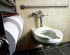

HSU Unveils "Greenest" Building in CSU
You can’t miss the latest addition to Humboldt State’s campus—all five stories and 84,000 square feet of it. The new Behavioral and Social Sciences (or “BSS”) building opened its doors this fall, and will provide students, faculty and staff with much-needed elbow room.
Our new building, however, was attracting attention and kudos long before it was finished. Why? Because it’s the “greenest” or most environmentally-friendly and sustainable building in the 23-campus Cal State University system.
Designed by Portland architectural firm, Yost Grube Hall, the BSS building meets the LEED (Leadership in Energy and Environmental Design) gold rating—the second highest of four ratings bestowed by the U.S. Green Building Council.
The ribbon-cutting ceremony for the new BSS building will be held October 12, 2007, at 3pm. Alumni returning for Homecoming are invited to attend the ceremony, featuring speeches from President Rollin Richmond, Interim Provost Bob Snyder, and the building architect Nels Hall.
Here are just a few of the innovative features that set the BSS building apart:
Click an image to enlarge. Then, when you have completed viewing the image, click the image again to reduce.
- 
Rainwater Flushes the Toilets
Rainwater (up to 20,000 gallons of it) is funneled into two massive water tanks, which are buried at the foot of the building. That water is then pumped throughout the building and used to flush toilets. The building’s designers predict that the stormwater will power at least four months of flushing. Calculations show that this system will reduce the need for municipally-provided potable water (to convey sewage) by almost 88 percent. The use of low-flow plumbing fixtures will also reduce overall water use (whether from the domestic or gray water system) by 65%.
-
More Windows, Less Light Bulbs
The BSS building makes extensive use of north and south-facing windows to capitalize on natural lighting. The end result? The BSS building will use 30-percent less power than mandated by California’s Title 24 energy consumption standards.
-
Wood with a Conscience
The BSS building features Doug Fir panels and linear wood strip throughout the building—what you can’t see, however, is that more than half of the wood used in the building is certified as having been grown and harvested sustainably.
-
Recycled from the Ground Up
Buried deep in the heart of the building are a host of earth-friendly, recycled materials: including recycled steel girders and recycled foundation materials. In fact, nearly 14 percent of the materials used in the BSS building are recycled products.
-
Saving Space in our Landfills
Construction wastes fill our nation’s landfills, but scarce little of it came from our new building. More than 75 percent of the BSS building’s construction wastes were recycled.
-
Cool Like the Breeze
Architects placed the BSS building so as to funnel naturally-occurring breezes throughout the building and reduce the structure’s reliance on conventional chiller-based air conditioning. The building’s heating, ventilation, air conditioning and refrigeration systems contain no HCFCs or Halons.
-
More Native Plants Mean Less Water, Less Pesticides
The grounds surrounding the BSS building are planted with over 50 kinds of native plants which are more disease and pest resistant than non-native flora. These plants are watered by a high-efficiency irrigation system, which consumes less water. Bottom line? Less water and pesticides. The native plants were also important to local tribes for medicinal and ceremonial uses.
-
Smart Heating
Offices and classrooms contain their own thermostats, which shut off automatically when windows are opened. The end result: less wasted heat and energy.
-
Automatic Lights
Sensors in the light switches sense when no one is in the room and shut the lights off to save energy.
-
More Bikes, Less Cars
Showers on the first floor of the BSS building encourage the building’s residents to commute to school and work via bicycle instead of by car.
-
Better Air Quality
Molecular gases such as formaldehyde and ammonia are hazardous to your health, yet are common in many paints and building materials. The BSS building makes extensive use of materials that exude as few of these gases (known as “VOCs” or Volatile Organic Compounds) as possible.
-
Blocking the Heat
Specialized sun shades in south-facing classrooms block excessive light that might heat up the building during the summer and require more cooling.


{kind=link}
{kind=link}
{kind=link}
{kind=link}
{kind=link}
{kind=link}
{kind=link}
{kind=link}
{kind=link}
{kind=link}
{kind=link}
{kind=link}